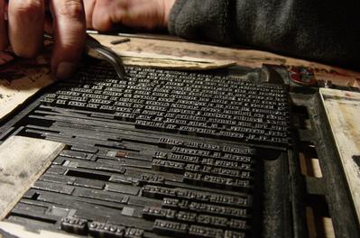

Examen de Primer Año,
Ayer fui a la casa de un amigo
fotógrafo que vivió algunos años en Estocolmo y que
tuvo la suerte de asistir a una exposición de grabados que recogía
la obra del mexicano José Guadalupe Posada, nacido en Aguascalientes
en 1852, y muerto en la ciudad de México en 1913, de oficio grabador.
La xilografía de este
afiche me impresionó muchísimo, quedé sobrecogido
al verla por primera vez. Aquí Posada se grabó a sí
mismo en medio de las faenas de su taller; está acompañado
por todos: el cajista, el componedor de las páginas y el redactor
que trae los textos en la mano. Pero él no está enteramente
presente, está absorto en lo que ocurre afuera, toda su atención
está clavada en una escena violenta, los disturbios callejeros
entre la milicia y el pueblo, premonitorios de la revolución que
se avecina. Y él la está dibujando para dar testimonio de
ello en el periódico del día siguiente. Este es el año
1902. Este año, en esta travesía,
nosotros quisimos inscribirnos en esta tradición gráfica,
no por la nostalgia de traer las antiguas técnicas, sino más
bien pensando en lo directo entre la matriz y el impreso, para estar más
próximo a la obra. La xilografía y los tipos móviles
están presentes en el origen de la imprenta y constituyen el primer
paso en la construcción de lo exactamente repetible. Es sin intercalar
otros pasos, es sin cambios de tamaño, sin cambios de intensidad,
es directo, al alcance de la mano, en el reino de lo táctil, además,
perfectamente adecuado al cálculo de la economía propia
de travesía.  Esta travesía reúne por dos semanas a 6 talleres en el lado norte del estero, con campamentos, comedores - aulas, cocinas, redes de agua, con cine, lugar de la obra, lugar de la palabra poética, casi todo con lo que se conforma una polis. Nosotros quisimos llevar el pulso de ese tiempo, más que en el mero registro, generar, a partir de grabados y escritos, una invención editorial en ronda, con los demás profesores de taller, con la poesía, y con todos quienes quisieron participar, en un esfuerzo por invitar e integrar. Quizá ese fue el único logro del Dumuño, porque en esa figura de hospitalidad de oír y hacer con todos, se pudo tentar un modo de cómo nos vimos y leímos a nosotros mismos, construimos nuestra imagen en ese grado público que es leernos como una polis. Y esta fidelidad pudo ser verificada y sometida a juicio cada vez, para ir avanzando sobre ella, porque se trata de algo que no se logra una vez y se descansa, sino que hubo que sostener edición a edición. Esa potencia dar cuenta de las experiencias nosotros la tenemos por la relación de imagen y de texto, entre el dibujo y el escrito: éstas son las notas originales - originadoras y ellas son el modo de cómo el taller de primer año se originó en el estudio, que a la manera de Posada, a partir de experiencias vividas, internas y ciertas, el taller es capaz de recogerlas con la agudeza de quien observa y la fija en el papel. Incluso, ellas son numeradas del uno en adelante para poderlas reunir, citar y ordenar cronológicamente, armando un compendio cada cual, hilado y coherente. Ése es el relato del estudio y es a partir de este itinerario de croquis de observación que quiere hacer germinar en cada cual este modo de enfrentarse y recoger el mundo. Cabe agradecer aquí a todos quienes se hicieron cargo de la elaboración del Dumuño, a los que voluntariamente se acercaron y fueron capaces de sostener las diversas faenas, a los que ordenaron tipos, a los que imprimieron, inventaron y trasnocharon, especialmente a Floro que discretamente nos guió y nos sostuvo con la poesía. A todos ellos, gracias.
|